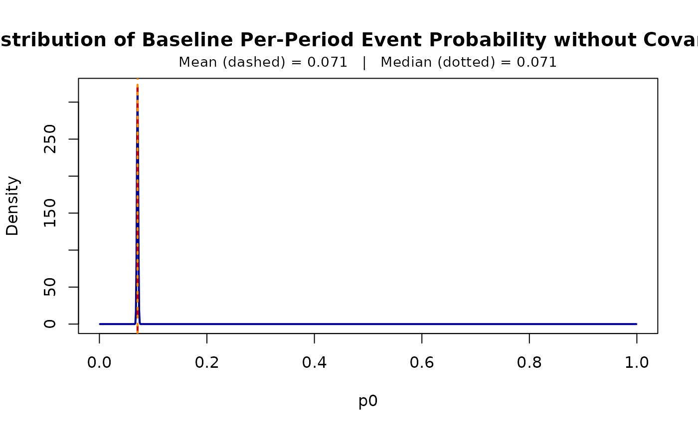

Plot the Baseline Per-Period Event Probability Distribution of a Fitted G2Gcov Model
Source:R/methods.R
plot_p0.RdPlots the distribution of the baseline per-period event probability \(p_0\), with all
covariates equal to zero, implied by a model fitted with
G2G_static_MLE (time-invariant covariates) or
G2G_varying_MLE (time-varying covariates). The mean and median
of \(p_0\) are marked with vertical lines and shown in a second title.
Details
In the G2G model, \(p_0 = 1 - e^{-\lambda}\), where \(\lambda\) follows a
Gamma distribution with shape \(r\) and rate \(\alpha\). The fitted
r and alpha are on the original covariate scale, so the curve
describes a subject whose covariates are all zero, which can lie outside the
range of the data. The density is drawn exactly (by a change of variables,
not by simulation), and the mean and median have closed forms:
\(1 - (\alpha / (1 + \alpha))^r\) and
\(1 - e^{-q}\), where \(q\) is the median of the Gamma distribution.
When \(r < 1\) the density is unbounded at 0, so the curve rises steeply
there and the mean lies above the median.
Examples
# \donttest{
data(kb_data)
kb_data$status <- 1L - kb_data$censor
fit <- G2G_varying_MLE("Surv(week, status) ~ coupon + anyp",
data = kb_data, subject = "id")
plot_p0(fit)

# }